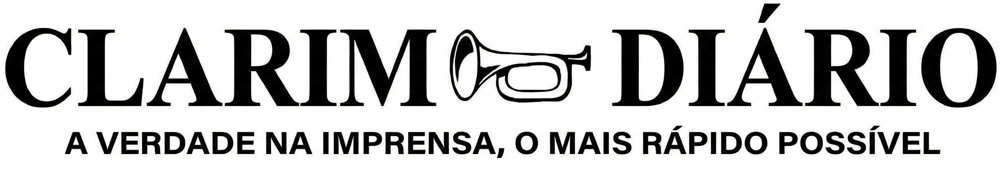

MORTE DE SENADOR EXPÕE ESQUEMA
Explosão e roubo antecedem morte de Norman Ward, expondo suposto esquema de laranjas.
O Senador Norman Ward foi encontrado morto horas após um ataque brutal a uma credora imobiliária. O incidente expôs conexões suspeitas com o político.
A empresa atacada, registrada em nome de um primo de Ward, seria fachada para os negócios do senador. A polícia investiga o vínculo entre os crimes.
SENADOR NORMAN WARD. FOTO: ARQUIVO